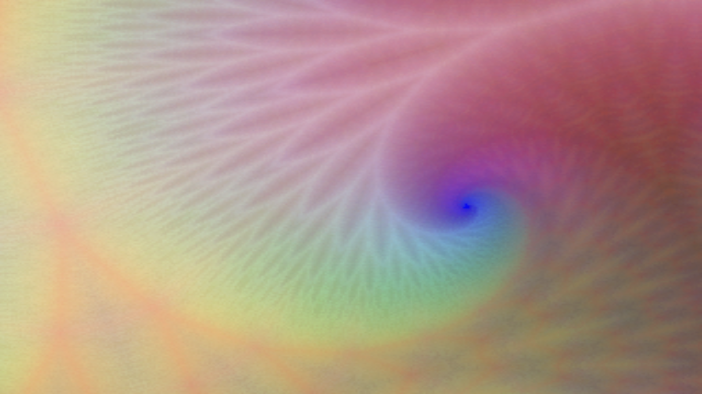

Jacob primarily uses Max/Jitter to create visual work, drawing influence from analog video synthesis, as well as minimal computer generated graphics.



Deer Hollow
4 videos to coincide with the release of their 'Awake' EP